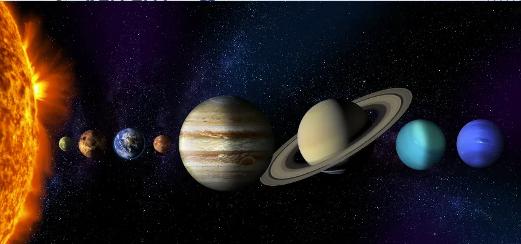
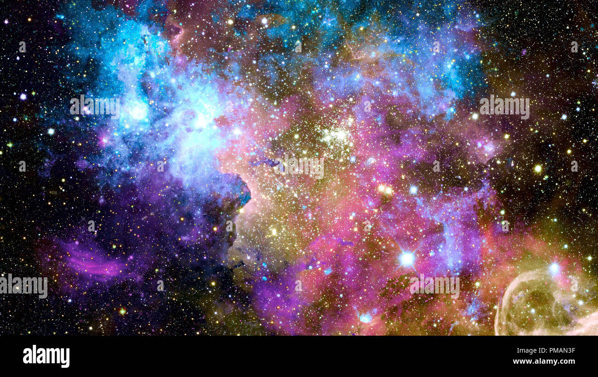
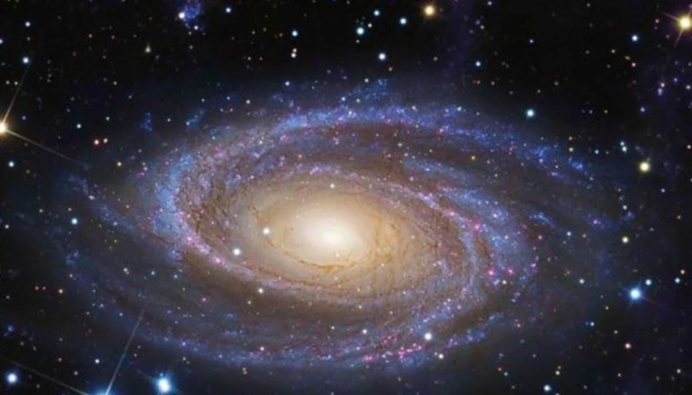
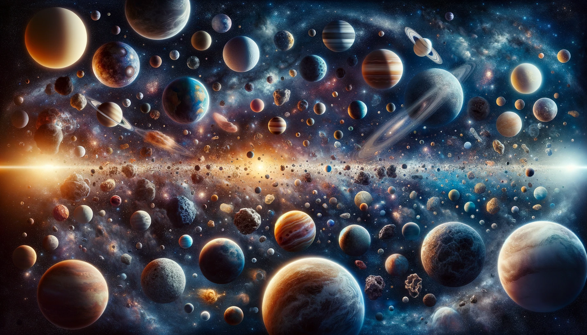
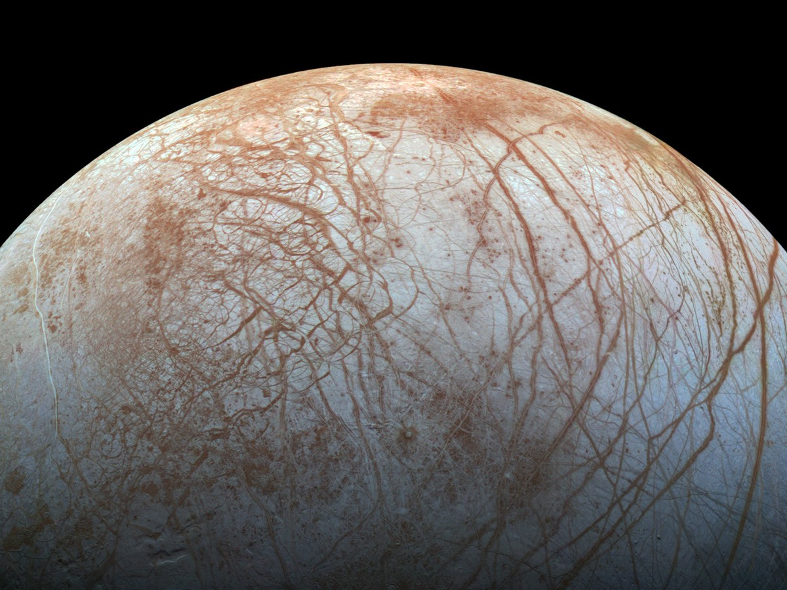

La Via Lattea
La nostra galassia vista dalla Terra

Il Sistema Solare
I pianeti che orbitano intorno al nostro Sole

Nebulose
Le culle delle stelle
Un viaggio attraverso le meraviglie del cosmo

Scopri i misteri dell'universo attraverso articoli, immagini e contenuti esclusivi dedicati all'astronomia. Dal nostro sistema solare fino ai confini dell'universo conosciuto, esplora con noi le meraviglie del cosmo.

Agenzia Spaziale Americana

Agenzia Spaziale Europea

Agenzia Spaziale Italiana

Istituto Nazionale di Astrofisica
La nostra galassia vista dalla Terra

I pianeti che orbitano intorno al nostro Sole

Le culle delle stelle
AstroBlog nasce dalla passione per l'astronomia e dal desiderio di rendere la scienza spaziale accessibile a tutti. Il nostro obiettivo è creare un ponte tra la ricerca astronomica e il pubblico generale.
Contenuti verificati da esperti del settore
Collaborazione con istituti di ricerca
Divulgazione scientifica accessibile


Gli astronomi hanno individuato un pianeta potenzialmente abitabile a soli 40 anni luce dalla Terra...
Leggi di più →
Prevista per il 2025 una missione per esplorare l'oceano sotto la superficie ghiacciata di Europa...
Leggi di più →


AstroBlog non è solo un sito di informazione, ma una comunità di appassionati di astronomia. Partecipa alle nostre iniziative: